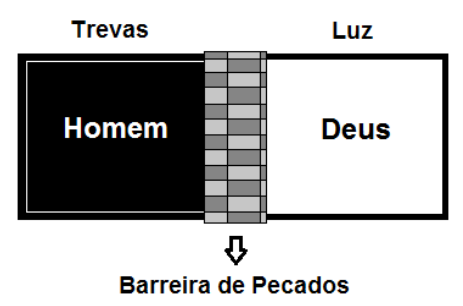

Introdução: 1 Pedro 2: 9-10
|
Trevas Não é povo de Deus Falta de misericórdia |
Luz Povo de Deus Misericórdia |
|
Perdido Não cristão Não discípulo |
Salvo Cristão Discípulo |
O pecado nos separa de Deus
Quem pecou? Todo mundo!
| SALÁRIO DO PECADO | DOM DE DEUS |
|
Morte Inferno Trevas |
Vida eterna Céu Luz |
| AS TREVAS | LUZ |
|---|---|
|
Pecado Separados de Deus |
Atos dos Apóstolos 2:38 O pecado é perdoado |
|
Nascer de novo da água e do Espírito João 3:5 |
Atos dos Apóstolos 2:38 Água = Batismo Espírito = Recebido no Batismo |
|
Romanos 3:25 Fé no sangue de Jesus nos salva |
Jesus derramou seu sangue ao morrer. Pelo batismo participamos pela fé na morte, sepultamento e resurreição de Cristo. Por consequência, conectamo-nos a seu sangue no batismo, sendo perdoados dos nossos pecados e SALVOS! |